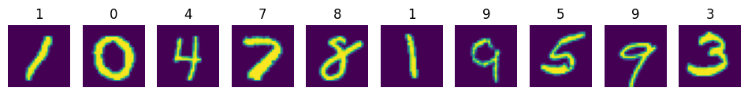
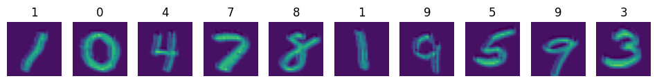
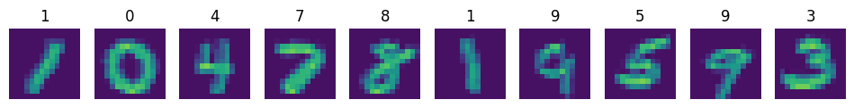
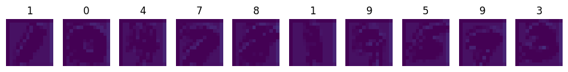
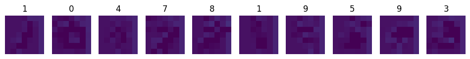

E1 — CNN Implementation
Training CNN Model using MNIST Dataset
For this demonstration we will be using MNIST dataset which is a popular dataset in training deep learning models.
Import Standard Libraries
torchvision.datasets module provides a variety of datasets that are commonly used for training machine learning and deep learning models. These datasets are preprocessed and can be easily integrated into PyTorch workflows for tasks such as image classification, object detection, and more. Dataset includes:
- MNIST
- CIFAR10
- CIFAR100
- ImageNet
100%|██████████████████████████████████████████████████████████████████████████████| 9.91M/9.91M [00:28<00:00, 353kB/s]
100%|██████████████████████████████████████████████████████████████████████████████| 28.9k/28.9k [00:00<00:00, 134kB/s]
100%|█████████████████████████████████████████████████████████████████████████████| 1.65M/1.65M [00:01<00:00, 1.20MB/s]
100%|█████████████████████████████████████████████████████████████████████████████| 4.54k/4.54k [00:00<00:00, 2.26MB/s]
Dataset MNIST
Number of datapoints: 60000
Root location: data
Split: Train
StandardTransform
Transform: Compose(
ToTensor()
)
Dataset MNIST
Number of datapoints: 10000
Root location: data
Split: Test
StandardTransform
Transform: Compose(
ToTensor()
)
PyTorch provides two data primitives: torch.utils.data.DataLoader and torch.utils.data.Dataset that allow you to use pre-loaded datasets as well as your own data. Dataset stores the samples and their corresponding labels, and DataLoader wraps an iterable around the Dataset to enable easy access to the samples.
torch.Size([10, 1, 28, 28])
For this demonstration, we will use the following architecture: it consists of two convolutional layers, each followed by its own max-pooling layer and activation function. Additionally, there are two fully connected layers, with the second layer using the softmax activation function.

Input Images

torch.Size([10, 1, 28, 28])
\[\text{Output Shape} = \frac{\text{input width} - \text{filter} + 2 \cdot \text{padding}}{\text{stride} + 1}\]
First Convolution Layer + Activation Function

torch.Size([10, 32, 28, 28])
First Pooling (MaxPooling)

torch.Size([10, 32, 14, 14])
Let's examine the feature map.
Second Convolution

torch.Size([10, 64, 14, 14])
Second Pooling (MaxPooling)

torch.Size([10, 64, 7, 7])
Flatten
[4, 4, 8, 4, 4, 8, 8, 4, 4, 4]
[1, 0, 4, 7, 8, 1, 9, 5, 9, 3]
QUESTION:
Why is it that the true and the predicted value is very distant from each other?
Now let's put them all together
Instantiate the Class
CNN(
(conv1): Conv2d(1, 32, kernel_size=(3, 3), stride=(1, 1), padding=(1, 1))
(pool1): MaxPool2d(kernel_size=(2, 2), stride=2, padding=0, dilation=1, ceil_mode=False)
(conv2): Conv2d(32, 64, kernel_size=(3, 3), stride=(1, 1), padding=(1, 1))
(pool2): MaxPool2d(kernel_size=(2, 2), stride=2, padding=0, dilation=1, ceil_mode=False)
(fcn1): Linear(in_features=3136, out_features=128, bias=True)
(fcn2): Linear(in_features=128, out_features=10, bias=True)
)
Model Parameters:
\(\quad\begin{align}(1\times32\times3\times3)+32+(32\times64\times3\times3)+64+(3136\times128)+128+(128\times10)+10 &=\\
288+32+18432+64+401408+128+1280+10 &= 421,642\end{align}\)
288
32
18432
64
401408
128
1280
10
______
421642
Define Criterion and Optimizer
device(type='cuda', index=0)
Let's walk through the training loop
for e in range(epochs):
train_corr = 0
val_corr = 0
This will iterate 5 times as what is defined below. train_corr and val_corr serves as temporary place holders for correctly predicted train data and correctly predicted validation data. Hence, train_corr and val_corr will be re-initialized to 0 again if an entire epoch is done.
for train_b, (x_train, y_train) in tqdm(enumerate(train_loader)):
train_b += 1
x_train = x_train.to(device)
y_train = y_train.to(device)
The second loop (nested loop) iterates over the train_loader. A single iteration of the train_loader is equal to 1 batch of features and targets, our batch size is 10, therefore in every iteration of the train_loader we are processing 10 instances. The entire training set or the len(train_loader.dataset) is 50,000. Therefore, to finish an entire epoch, we need to process 5000 batches with a batch size of 10 (5000 x 10 = 50,000).
NOTE:
When an iterable object is wrapped around an enumerate function, the output will return an index for each iterated values. train_b is the number of batches that has been processed.
The to() functions next to the x_train and y_train are simply there to move the data into the available computing device. Remember that you need to move the model as well to the available device.
OUTPUT:
x_train.shape = torch.Size([10, 1, 28, 28])
y_train.shape = torch.Size([10])
train_pred = model(x_train)
train_loss = criterion(train_pred, y_train)
train_pred_vec = torch.max(train_pred.data, 1)[1]
train_corr += (train_pred_vec == y_train).sum()
train_pred represents the model’s predictions for the current batch. The shape of train_pred is torch.Size([10, 10]). Each row in train_pred corresponds to an instance in the batch, and each column represents a class. The values in each row indicate the model’s estimated probabilities or scores for each class for that instance.
train_loss is a scalar value of the error that was calculated from that particular batch.
train_pred_vec is a vector that contained the predicted labels of the current batch. The values are integer that ranges from 0 to 9. train_pred_vec.shape is torch.Size([10]), the values represents each predicted label of each instance.
train_corr performs comparison operation to check how many samples in the batch was correctly predicted, the value of the train_corr will be inceremented, but will be re-initialized back to 0 when an entire epoch is done.
# Update parameters
optimizer.zero_grad()
train_loss.backward()
optimizer.step()
We need to update the parameters for every batch that passes in every epoch, we can do this by applying zero_grad() to the optimizer, this will clear the gradients for the next batch, if we don’t do that, the gradients will accumulate for every batch for the entire epoch.
train_loss.backward() is used to compute the gradients of the loss with respect to the model’s parameters during the backward pass of the training process. It’s a fundamental step in the training loop of a neural network.
optimizer.step() is a method used to update the parameters (weights and biases) of a neural network model during the training process. It is called after the gradients of the model’s parameters have been computed during the backward pass.
if train_b % 1250 == 0:
print(f"epoch: {e+1:2} | batch: {train_b:4} | instances: [{train_b*batch_size:6} / {len(train_loader) * batch_size}] | loss: {train_loss.item()}")
print(f"✅{train_corr.item()} of {train_b*batch_size:2} | accuracy: {round(((train_corr.item() / (train_b*batch_size))) * 100 , 3)}%")
This prints training progress information during each batch iteration in a concise format. It displays the current epoch, batch number, the number of processed instances, the loss, and the accuracy achieved up to that point in training.
train_correct.append(train_corr.item())
train_losses.append(train_loss.item())
Appends current the batch’s train_corr and train_loss on the empty lists outside the epoch.
with torch.no_grad():
for val_b, (x_val, y_val) in enumerate(val_loader):
val_b += 1
x_val = x_val.to(device)
y_val = y_val.to(device)
val_pred = model(x_val)
val_pred_vec = torch.max(val_pred.data, 1)[1]
val_corr += (val_pred_vec == y_val).sum()
val_loss = criterion(val_pred, y_val)
val_correct.append(val_corr.item())
val_losses.append(val_loss.item())
val_acc = val_corr.item() / (len(val_loader) * batch_size)
if val_acc > best_acc:
best_acc = val_acc
torch.save(model.state_dict(), f"model/best_{model._get_name()}.pth")
print(f"\t📁New best model saved! | accuracy: {best_acc*100}%")
train_epoch_acc = train_corr.item() / (batch_size * len(train_loader))
val_epoch_acc = val_corr.item() / (batch_size * len(val_loader))
train_accs.append(train_epoch_acc)
val_accs.append(val_epoch_acc)
print(f'\nDuration: {time.time() - start_time:.0f} seconds')
This part of the code performs the evaluation of the trained model for every epoch, the code is quite similar to the training process but without the updating of parameters. The code also have features of saving the state_dict (trained parameters) of the model with best accuracy.
epoch: 1 | batch: 1250 | instances: [ 12500 / 48000] | loss: 1.4611504077911377
✅12067 of 12500 | accuracy: 96.536%
epoch: 1 | batch: 2500 | instances: [ 25000 / 48000] | loss: 1.4611502885818481
✅24175 of 25000 | accuracy: 96.7%
epoch: 1 | batch: 3750 | instances: [ 37500 / 48000] | loss: 1.5611381530761719
✅36313 of 37500 | accuracy: 96.835%
📁New best model saved! | accuracy: 97.31666666666666%
epoch: 2 | batch: 1250 | instances: [ 12500 / 48000] | loss: 1.4611502885818481
✅12128 of 12500 | accuracy: 97.024%
epoch: 2 | batch: 2500 | instances: [ 25000 / 48000] | loss: 1.547888994216919
✅24213 of 25000 | accuracy: 96.852%
epoch: 2 | batch: 3750 | instances: [ 37500 / 48000] | loss: 1.4611502885818481
✅36363 of 37500 | accuracy: 96.968%
epoch: 3 | batch: 1250 | instances: [ 12500 / 48000] | loss: 1.4611502885818481
✅12136 of 12500 | accuracy: 97.088%
epoch: 3 | batch: 2500 | instances: [ 25000 / 48000] | loss: 1.4611502885818481
✅24303 of 25000 | accuracy: 97.212%
epoch: 3 | batch: 3750 | instances: [ 37500 / 48000] | loss: 1.5582399368286133
✅36419 of 37500 | accuracy: 97.117%
epoch: 4 | batch: 1250 | instances: [ 12500 / 48000] | loss: 1.4611502885818481
✅12182 of 12500 | accuracy: 97.456%
epoch: 4 | batch: 2500 | instances: [ 25000 / 48000] | loss: 1.4611502885818481
✅24307 of 25000 | accuracy: 97.228%
epoch: 4 | batch: 3750 | instances: [ 37500 / 48000] | loss: 1.4611502885818481
✅36432 of 37500 | accuracy: 97.152%
📁New best model saved! | accuracy: 97.66666666666667%
epoch: 5 | batch: 1250 | instances: [ 12500 / 48000] | loss: 1.5603845119476318
✅12135 of 12500 | accuracy: 97.08%
epoch: 5 | batch: 2500 | instances: [ 25000 / 48000] | loss: 1.4611502885818481
✅24311 of 25000 | accuracy: 97.244%
epoch: 5 | batch: 3750 | instances: [ 37500 / 48000] | loss: 1.561150312423706
✅36553 of 37500 | accuracy: 97.475%
Duration: 299 seconds
Testing
Classification Matrix
[0, 1, 2, 3, 4, 5, 6, 7, 8, 9]
tensor([7, 2, 1, ..., 4, 5, 6], device='cuda:0')
tensor([7, 2, 1, ..., 4, 5, 6], device='cuda:0')
[ 0 1 2 3 4 5 6 7 8 9]
[[969 0 1 0 2 0 7 1 0 0]
[ 0 1133 0 0 0 0 1 1 0 0]
[ 4 36 968 0 0 0 2 16 6 0]
[ 6 1 4 987 0 0 0 10 1 1]
[ 0 16 2 0 933 0 15 6 2 8]
[ 7 1 0 12 0 858 3 8 1 2]
[ 4 3 0 0 1 6 943 0 1 0]
[ 0 7 7 1 0 0 0 1012 1 0]
[ 11 7 0 0 1 6 8 9 930 2]
[ 10 7 2 2 3 5 1 40 2 937]]
Let's assess the misses
tensor([7, 2, 1, ..., 4, 5, 6], device='cuda:0')
Laboratory Activity 6
Instruction: Convert the following CNN architecture diagram into a PyTorch CNN Architecture.

Student solution — Lab Activity 6
This is the completed work for the task above. A separate, runnable notebook is also available in the Completed Lab Activities navigation section.
CNNArchitectureExample(
(features): Sequential(
(0): Conv2d(1, 32, kernel_size=(3, 3), stride=(1, 1), padding=(1, 1))
(1): ReLU()
(2): MaxPool2d(kernel_size=2, stride=2, padding=0, dilation=1, ceil_mode=False)
(3): Conv2d(32, 64, kernel_size=(3, 3), stride=(1, 1), padding=(1, 1))
(4): ReLU()
(5): MaxPool2d(kernel_size=2, stride=2, padding=0, dilation=1, ceil_mode=False)
)
(classifier): Sequential(
(0): Flatten(start_dim=1, end_dim=-1)
(1): Linear(in_features=3136, out_features=128, bias=True)
(2): ReLU()
(3): Linear(in_features=128, out_features=10, bias=True)
)
)
Trainable parameters: 421642
Input: (4, 1, 28, 28)
Convolution output: (4, 64, 7, 7)
Class scores: (4, 10)
Predicted class indexes: [3, 3, 8, 8]
One test optimization step completed; dummy-label loss = 2.3621
Architecture trace
Before submitting this as Task 6: obtain the instructor’s quick_draw.png and confirm the diagram’s input shape, convolution filters, pooling, and final output. The demonstrated 28×28 architecture is not guaranteed to be the same architecture.